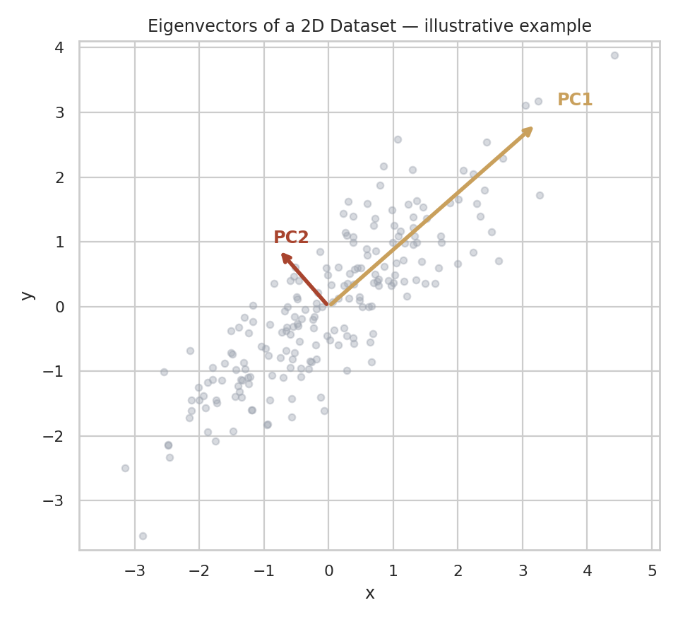
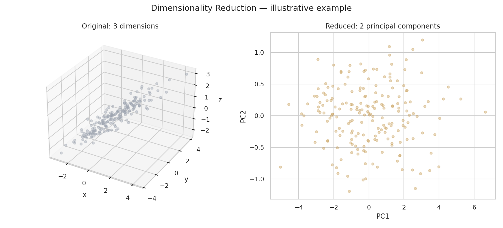
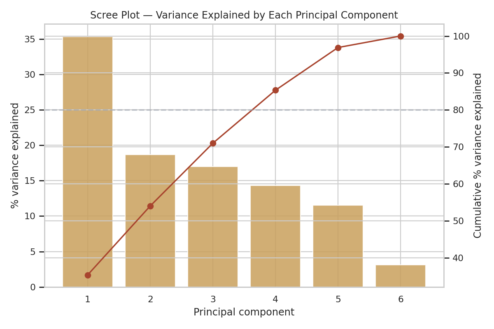
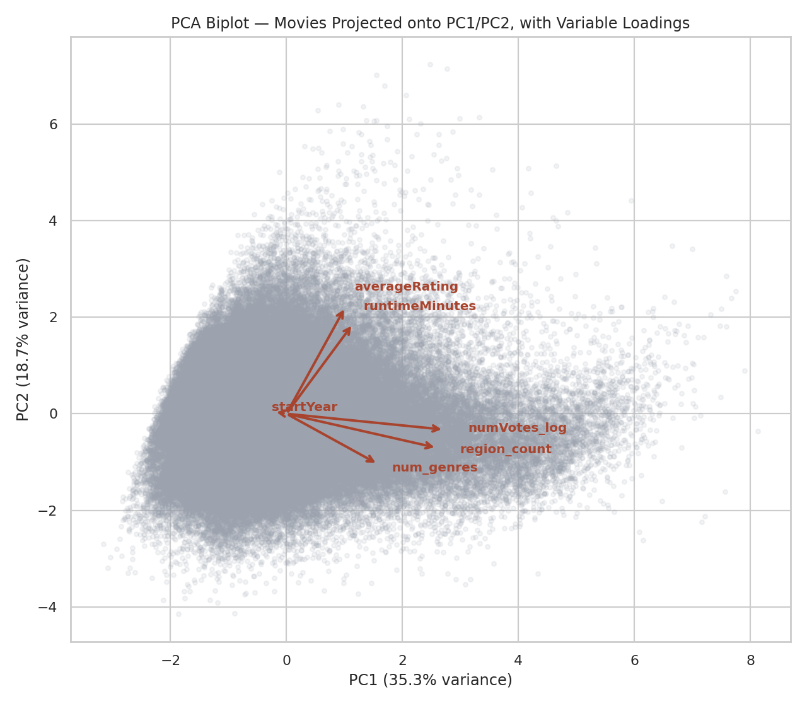
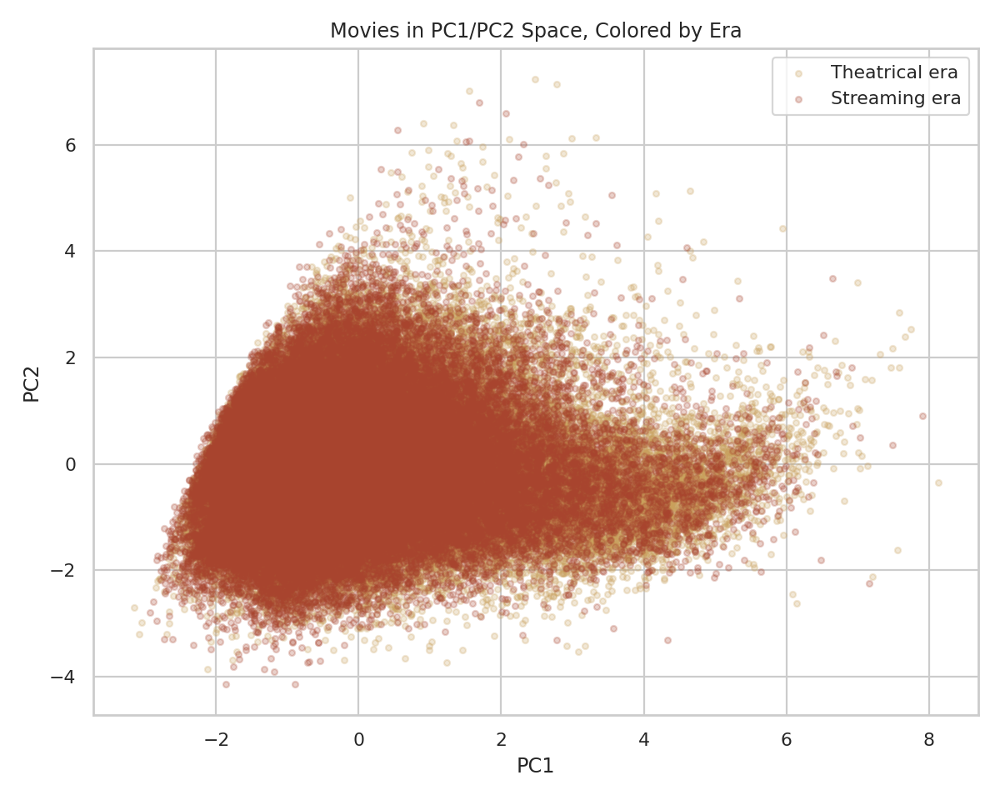

Section 04
Principal Component Analysis
Reducing six numeric movie attributes down to the handful of underlying patterns that explain most of the variation between films.
(a) Overview
Principal Component Analysis (PCA) is a dimensionality reduction technique that transforms a set of possibly-correlated numeric variables into a smaller set of new, uncorrelated variables called principal components, ordered so that the first component captures as much of the data's total variance as possible, the second captures as much of the remaining variance as possible (while staying uncorrelated with the first), and so on.
At the mathematical core of PCA are eigenvalues and eigenvectors of the data's covariance matrix. Each eigenvector points in a direction through the data (a potential new axis), and its paired eigenvalue measures how much variance the data has along that direction. PCA simply finds the eigenvectors with the largest eigenvalues, these become the principal components, i.e. the directions along which the data varies the most. A direction with a tiny eigenvalue contributes very little information and can often be dropped with minimal loss.
Dimensionality reduction is the general practice of representing data with fewer variables than it originally had, while preserving as much meaningful structure as possible. High-dimensional data poses real, practical challenges: it's impossible to visualize directly beyond 3 dimensions, distances between points become less meaningful as dimensions increase (a phenomenon known as the "curse of dimensionality"), correlated variables can make patterns harder to isolate, and many downstream methods become slower or less stable as the number of input variables grows. By condensing several correlated numeric attributes down to 2 or 3 principal components, PCA makes it possible to plot and reason about relationships that would otherwise require tracking many variables simultaneously, which is exactly the motivation for applying it here, given the six numeric movie attributes in use.


Both illustrations above use small synthetic examples purely to demonstrate the concepts — not the movie dataset itself.
(b) Data Prep
PCA requires the same kind of input as clustering: numeric, unlabeled data. Beyond
that, PCA specifically requires the data to be standardized (centered to zero mean, scaled
to unit variance) before use, because PCA identifies directions of maximum variance, a feature measured
on a much larger numeric scale (like raw vote counts, which range into the millions) would otherwise
dominate the components purely due to its units, not because it's actually more informative. The exact
same six-feature set used for clustering is reused here: averageRating,
numVotes (log-transformed), runtimeMinutes, startYear,
num_genres, and region_count.

Link to the data sample: data/unsupervised_features.csv (same derived numeric dataset used for the Clustering tab).
(c) Code
Full script: scripts/pca.py
from sklearn.preprocessing import StandardScaler
from sklearn.decomposition import PCA
X_scaled = StandardScaler().fit_transform(X) # X = the 6 numeric features
pca = PCA(n_components=6, random_state=42)
scores = pca.fit_transform(X_scaled)
explained = pca.explained_variance_ratio_ # % variance per component
loadings = pca.components_.T * (pca.explained_variance_ ** 0.5) # for the biplot
(d) Results
Run on the full prepared feature set — 122,872 movies.
Scree plot — variance explained per component

PC1 explains 35.3% of total variance on its own, and PC2 adds another 18.7%, bringing the first two components to 54.0% combined. Reaching 80% cumulative variance takes 4 components (85.3% cumulative at PC4), and nearly all variance (96.9%) is captured by 5 of the 6 original dimensions. The drop-off is fairly gradual rather than sharp — no single component dominates overwhelmingly, and even the smallest (PC6, at 3.1%) still carries some real signal. This gradual decline is consistent with the clustering results: if one component had captured the vast majority of variance, that would point to a few sharply distinct film types; instead, variation is spread across several roughly-comparable dimensions, matching the continuous, non-clustered structure the silhouette and ARI results also suggested.
Biplot — how the original variables relate to PC1 and PC2

PC1/PC2 scatter, colored by era

(e) Conclusions
PCA shows that the six structural attributes are not redundant with one another: it takes four principal components to retain about 85% of the variance and five to reach nearly 97%, so the data cannot be squeezed into two dimensions without real loss. The first two components together capture 54.0% of the variance (35.3% and 18.7%), enough to make a 2D picture informative but not complete, and worth reading with that caveat in mind.
The gradual decline in explained variance matches what the clustering tab found from a different angle: structural variation among films is spread across several comparable dimensions rather than concentrated in one or two dominant patterns. For the topic of audience ratings, that suggests no single structural trait, or small bundle of traits, is likely to explain much on its own. Any link between how a film is built and distributed and how audiences rate it will probably emerge from combinations of attributes, which is exactly the situation where later modeling methods have something to add beyond simple descriptive comparisons.